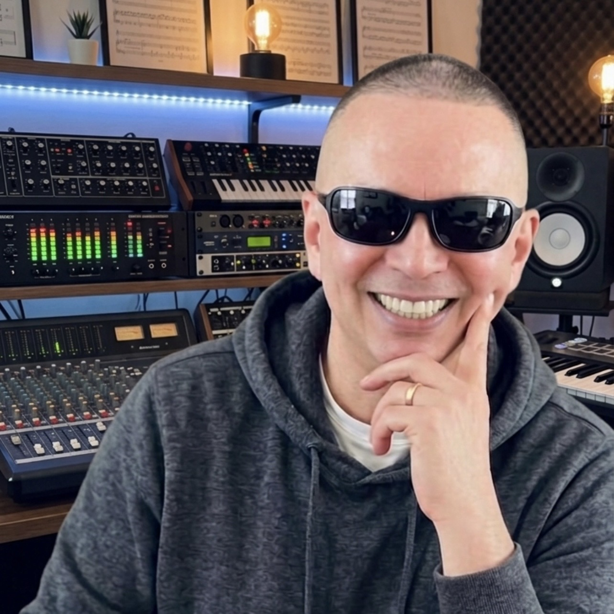

ANTONY D'ALESSANDRO
COMPOSER
"Exploring and creating from within is where true magic happens. It is the highest form of freedom, where the unknown unfolds."
Antony D'Alessandro is an independent composer whose work redefines the boundaries between sonic architecture and emotional depth. Defying simple categorisation, his music weaves a fluid tapestry through avant-garde electronics, ethereal spaces, and art-pop, often laced with psychedelic undertones, turning sound into an uncompromising immersive journey.
Driven by a relentless search for new musical idioms, D'Alessandro conceptualised the genre "Sci-Fi Tekno" through his albums "TEKNOTICA" and "Teknotica Gold", fusing dystopian, high-concept atmospheres with driving machine rhythms. This fascination with futuristic themes deepened with the EP "The Borg Queen", a sci-fi ambient tribute to the iconic Star Trek character, where synthetic textures are translated into a haunting, panoramic aural landscape.
The evolution of his sound culminated in "B L U E M O O R", establishing both a visionary opus and an entirely new musical genre, descending straight into the moor of the soul. Within this body of work, D'Alessandro navigates the tension between fragility and digital rigour, shifting from the claustrophobic anxiety of subconscious shadows to the expansive stillness of open space—a sequence of auditory movements that consciously dismantle conventional song structure.
Despite the vastness of these creative territories, his work remains deeply rooted in personal truth. Bridging the introspective Italian songwriting of the album "Parlo da Solo" and the heartfelt resonance of "All the Love I Can", a dedication to his wife, D'Alessandro grounds his sonic explorations in rare, unfiltered human vulnerability.
His latest release, "CHIAROSCURO", marks a profound refinement of this artistic trajectory. Living up to its name, this cinematic dark ambient instrumental is built entirely on contrast, playing out like a slow-moving shadow play. It balances fleeting moments of light against a creeping disquiet, steadily intensifying before dissolving into a cold abyss.
Whether navigating the outermost edges of the unknown or the intricate labyrinths of the human psyche, Antony D'Alessandro continues to craft music for those who seek to lose themselves in the sound.